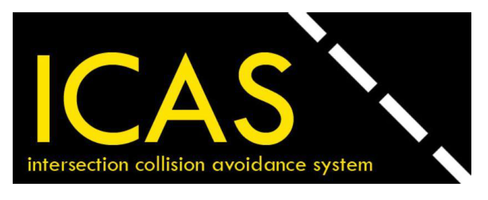

Intersection Collision Avoidance System
Intersection Collision Avoidance System (ICAS) is an
applications development for a series of technologies
directly linking road vehicles to their physical
surroundings in order to improve road safety.
A Java based server client application + hardware implementation (GPS-Microcontrollers), based upon that vehicles can be connected to servers on the streets to be able to control traffic